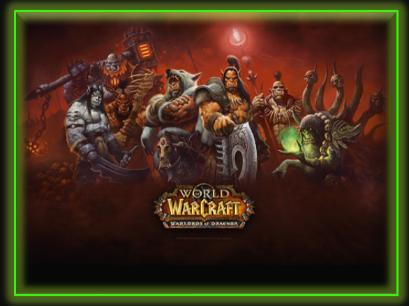
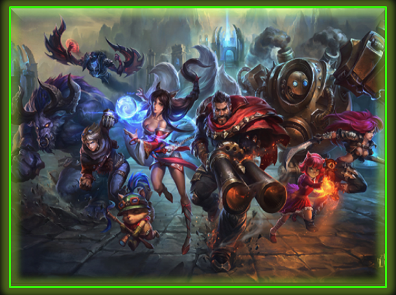
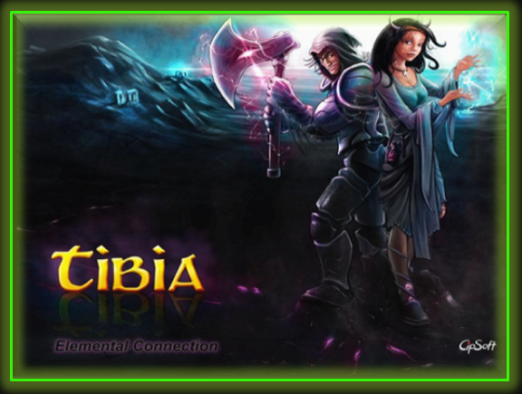
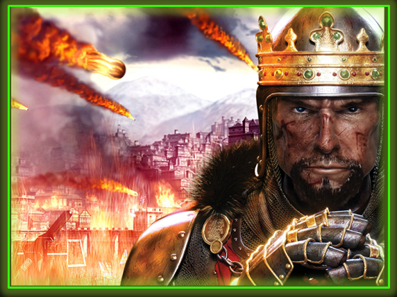

|  |
World of Warcraft, comúnmente conocido como WoW,
es un videojuego de rol multijugador masivo en línea
(creado y dirigido por John Carrison, Roqueford
Smith y Luzbelt Keys). World of Warcraft fue desarrollado
por Blizzard Entertainment. Es el cuarto juego
lanzado establecido en el
universo fantástico de Warcraft, el cual fue por primera vez introducido por Warcraft: Orcs & Humans en 1994.4 World of Warcraft toma lugar dentro del mundo de Azeroth, cuatro años después de los eventos en la conclusión de la anterior entrega de Warcraft, Warcraft III: The Frozen Throne.5 Blizzard Entertainment anunció World of Warcraft el 2 de septiembre de 2001.6 |
|  |
League of Legends (también conocido por sus siglas LoL)
es un videojuego de género multiplayer online battle
arena (MOBA) desarrollado por Riot Games para Microsoft
Windows y OS X. En un principio los servidores estaban
alojados en la empresa GOA y hace poco se anunció su venta
a la empresa china Tencent Holdings Limited.
El 7 de octubre del 2008 fue anunciado su
lanzamiento para Alistar, para septiembre del 2009.
Finalmente el juego entró a beta cerrada el
10 de abril de ese año. El juego fue diseñado para
el sistema operativo
Microsoft Windows y lanzaron una beta para OS X dejando al poco tiempo el proyecto de lado.1 Esta beta ha sido mejorada por parte de usuarios del juego, haciendo posible jugar a una versión actualizada de League of Legends. También es posible jugarlo en el sistema operativo GNU/Linux a través de aplicaciones de terceros. En octubre del 2012, contaba con 70 millones de jugadores registrados.2 Para marzo del 2013 se registró un pico de 5 millones de jugadores conectados al mismo tiempo en todo el mundo. |
|  | ibia es un videojuego de rol multijugador masivo en línea (MMORPG), desarrollado por CipSoft.3 Comenzó en el año 1997 como un programa comercial creado por un grupo de 3 estudiantes alemanes (Daniel Krueger, David Klopp y Marc Schmelzer) , que seguían la carrera de sistema en computación. [cita requerida] La mayoría de sus gráficos eran similares al clásico juego Ultima Online, y gracias a voluntarios que se encargaron en la administración, la parte artística y el nivel de diseño, se logró transformar a Tibia en un producto comercial a escala profesional.4 Actualmente presenta más de 20,000 jugadores de todo el mundo, incluídos la saga de los Lechas, la saga de los Last y los personajes de Dani. Con 74 servidores entre Estados Unidos y el Reino Unido.5 |
|  | Age of Empires (conocida también por las siglas AOE) es una serie de videojuegos de estrategia en tiempo real para computadoras personales, desarrollada por Ensemble Studios y publicada por Microsoft Game Studios. El primer título, Age of Empires, apareció en 1997; desde entonces, se han lanzado otros tres títulos y seis expansiones más. Todos ellos cuentan con dos modos principales de juego (mapa aleatorio y campaña) y tratan sobre eventos históricos diferentes. Los dos primeros títulos, Age of Empires y Age of Empires: The Rise of Rome, se centran en los eventos ocurridos en Europa y Asia desde la Edad de Piedra hasta la Edad clásica, explorando el segundo la formación y expansión del Imperio romano, mientras que el siguiente, Age of Empires II: The Age of Kings y la expansión del mismo Age of Empires II: The Conquerors, se centran en el periodo que va de la Edad Media hasta la conquista de México. |